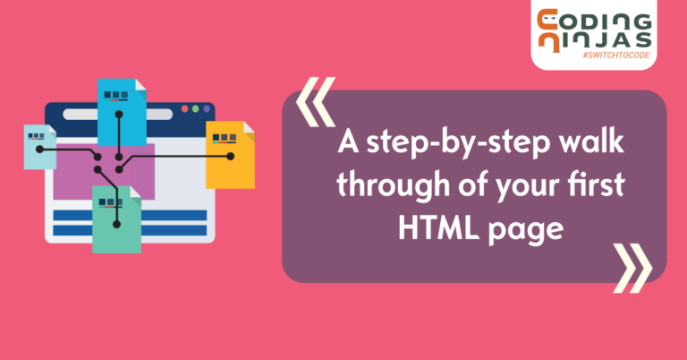
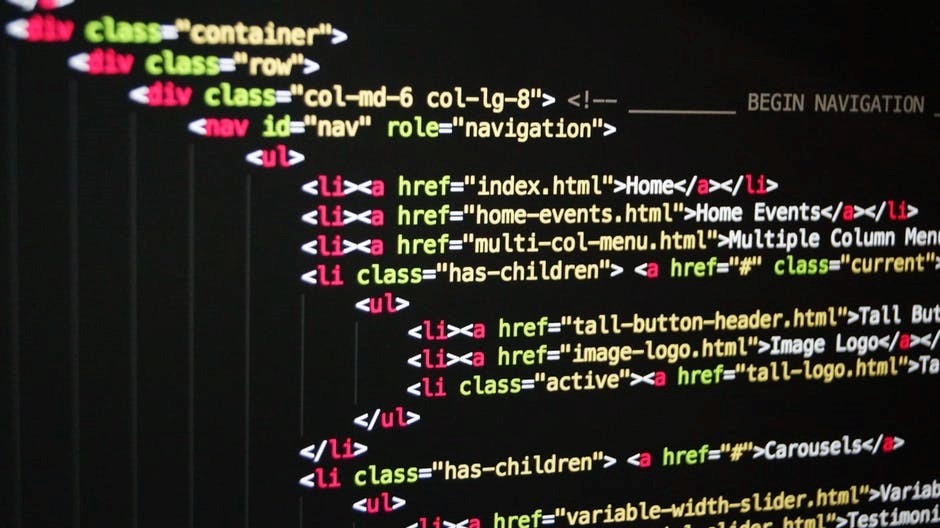
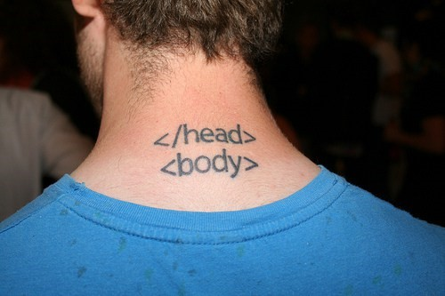

Don’t you just love exploring beautiful and neat sites with a clean user interface? While most of us would reply with an assertive ‘YES,’ little, do we know the kind of effort and skill that goes into making a website attractive and user-friendly. The secret to creating an impressive site is to master the art of front-end development, and no, it is not as easy as it seems!
However, it is not impossible either. Here are five tips that’ll help you get better in front-end design and web development.

Automate!
Always follow your passion
Do what feels you good
Listen to your heart
Have full focus
Refactor Your Code From Time To Time.
Learning Command Line Is The Way To Go.
Invest In Productive Tools.
Always Be Curious.
As a front-end developer, you already have to take care of minute little details that can get overwhelming at times. You have to invest your time on things like Boilerplate, testing, workflow, dependency management, performance, optimization, build, deployment, and so on. Doesn’t sound easy, right?
Take some steam off yourself and incorporate automation into your workflow. While automation can take care of things such as optimization, testing, etc., you can focus on the core areas of front-end development such as HTML, CSS, creating the client-side software, enhancing the user-experience, and so on. By doing so, not only will your productivity increase, but you will also learn to use your time to focus on the areas that’ll improve the overall functionality of your site. Grunt, Gulp, and Broccoli are some very efficient automation tools.
By “refactoring” your code, you’re only enhancing the code without tampering with its functionality. This will improve the quality and readability quotient of your code and the more often you do it, your code will continually be updated into a cleaner and fresher version of what it was before. Apart from that, one of the most significant advantages that refactoring offers is that it ensures your code remains free from plagiarism.
It is a standard convention among developers to use GUI tools to power the terminal. What most of them don’t realize is that by doing so, they end up spending a significant portion of their valuable time in handling GUI tools than making progress on the terminal. The right way to go about it is learning the command line. Start with the basics of the command line and advance to higher levels as you go, and you’ll find that you can complete several tasks with much more ease and efficiency with command line tools than with GUI tools. Moreover, automating the terminal with appropriate commands is a great way to save time and energy.
The Internet is teeming with a host of web development tools, from browser add-ons to smart plugins, the amount of choices available now is massive! So, why not invest in some really productive web tools that’ll help you improve your front-end designing skills? Tools like Sublime Text, jQuery, Emmet, GitHub, Bootstrap, and Sass are nothing short of a godsend for web developers.

A front-end developer has to keep himself/herself updated continuously with the latest news and innovations in the field. You need to take a proactive stand and learn new things about front-end development from informative blogs and videos. CSS Weekly, HTML5 Weekly, JavaScript Weekly, Web Design Weekly, Codrops, and ShopTalk Podcast are some of the most informative and useful learning sources for front-end developers. Also, make it a point to attend conferences and webinars. These meet-ups provide excellent opportunities to expand your network and get acquainted with talented people.

While these tips will surely help you become a better front-end designer, in the long run, you must always remember two things while designing your platform – keep it simple and neat, and don’t for get to create your signature style. And for all you peeps interested in making it big in front-end development, Coding Ninjas has the perfect course for you! To know more, drop by at our website.